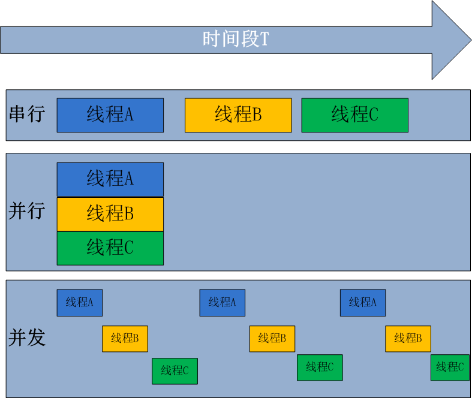
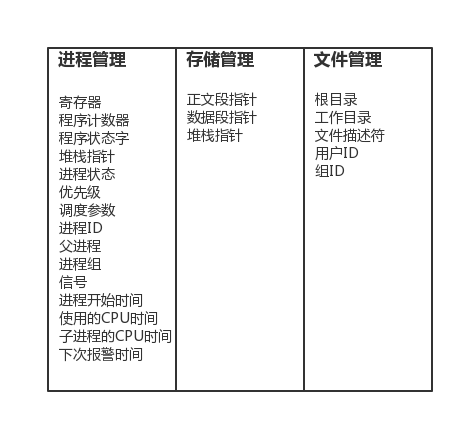

原文连接:https://www.cnblogs.com/changxin7/p/11374317.html
一 什么是进程
进程：正在进行的一个过程或者说一个任务。而负责执行任务则是cpu。
举例（单核+多道，实现多个进程的并发执行）：
太白金星在一个时间段内有很多任务要做：python备课的任务，写书的任务，交女朋友的任务，王者荣耀上分的任务，
但太白金星同一时刻只能做一个任务（cpu同一时间只能干一个活），如何才能玩出多个任务并发执行的效果？
太白金星备一会课，再去跟嫂子聊聊天，再去打一会王者荣耀....这就保证了每个任务都在进行中.
二 进程与程序的区别
程序仅仅只是一堆代码而已，而进程指的是程序的运行过程。
举例：
想象一位有一手好厨艺的计算机科学家太白金星正在为他的女儿元昊烘制生日蛋糕。
他有做生日蛋糕的食谱，
厨房里有所需的原料:面粉、鸡蛋、韭菜，蒜泥等。
在这个比喻中：
做蛋糕的食谱就是程序(即用适当形式描述的算法)
计算机科学家就是处理器(cpu)
而做蛋糕的各种原料就是输入数据。
进程就是厨师阅读食谱、取来各种原料以及烘制蛋糕等一系列动作的总和。
现在假设计算机科学家太白金星的儿子alex哭着跑了进来，说：XXXXXXXXXXXXXX。
科学家太白金星想了想，处理儿子alex蛰伤的任务比给女儿元昊做蛋糕的任务更重要，于是
计算机科学家就记录下他照着食谱做到哪儿了(保存进程的当前状态)，然后拿出一本急救手册，按照其中的指示处理蛰伤。这里，我们看到处理机从一个进程(做蛋糕)切换到另一个高优先级的进程(实施医疗救治)，每个进程拥有各自的程序(食谱和急救手册)。当蜜蜂蛰伤处理完之后，这位计算机科学家又回来做蛋糕，从他
离开时的那一步继续做下去。
需要强调的是：同一个程序执行两次，那也是两个进程，比如打开暴风影音，虽然都是同一个软件，但是一个可以播放苍井空，一个可以播放饭岛爱。
三 并发与并行
无论是并行还是并发，在用户看来都是'同时'运行的，不管是进程还是线程，都只是一个任务而已，真是干活的是cpu，cpu来做这些任务，而一个cpu同一时刻只能执行一个任务
一 并发：是伪并行，即看起来是同时运行。单个cpu+多道技术就可以实现并发，（并行也属于并发）
二 并行：同时运行，只有具备多个cpu才能实现并行
单核下，可以利用多道技术，多个核，每个核也都可以利用多道技术（多道技术是针对单核而言的）
有四个核，六个任务，这样同一时间有四个任务被执行，假设分别被分配给了cpu1，cpu2，cpu3，cpu4，
一旦任务1遇到I/O就被迫中断执行，此时任务5就拿到cpu1的时间片去执行，这就是单核下的多道技术
而一旦任务1的I/O结束了，操作系统会重新调用它(需知进程的调度、分配给哪个cpu运行，由操作系统说了算)，可能被分配给四个cpu中的任意一个去执行

所有现代计算机经常会在同一时间做很多件事，一个用户的PC（无论是单cpu还是多cpu），都可以同时运行多个任务（一个任务可以理解为一个进程）。
启动一个进程来杀毒（360软件）
启动一个进程来看电影（暴风影音）
启动一个进程来聊天（腾讯QQ）
所有的这些进程都需被管理，于是一个支持多进程的多道程序系统是至关重要的
多道技术概念回顾：内存中同时存入多道（多个）程序，cpu从一个进程快速切换到另外一个，使每个进程各自运行几十或几百毫秒，这样，虽然在某一个瞬间，一个cpu只能执行一个任务，但在1秒内，cpu却可以运行多个进程，这就给人产生了并行的错觉，即伪并发，以此来区分多处理器操作系统的真正硬件并行（多个cpu共享同一个物理内存）
四 同步\异步and阻塞\非阻塞（重点）
同步：
#所谓同步，就是在发出一个功能调用时，在没有得到结果之前，该调用就不会返回。按照这个定义，其实绝大多数函数都是同步调用。但是一般而言，我们在说同步、异步的时候，特指那些需要其他部件协作或者需要一定时间完成的任务。
#举例：
#1. multiprocessing.Pool下的apply #发起同步调用后，就在原地等着任务结束，根本不考虑任务是在计算还是在io阻塞，总之就是一股脑地等任务结束
#2. concurrent.futures.ProcessPoolExecutor().submit(func,).result()
#3. concurrent.futures.ThreadPoolExecutor().submit(func,).result()异步：
#异步的概念和同步相对。当一个异步功能调用发出后，调用者不能立刻得到结果。当该异步功能完成后，通过状态、通知或回调来通知调用者。如果异步功能用状态来通知，那么调用者就需要每隔一定时间检查一次，效率就很低（有些初学多线程编程的人，总喜欢用一个循环去检查某个变量的值，这其实是一 种很严重的错误）。如果是使用通知的方式，效率则很高，因为异步功能几乎不需要做额外的操作。至于回调函数，其实和通知没太多区别。
#举例：
#1. multiprocessing.Pool().apply_async() #发起异步调用后，并不会等待任务结束才返回，相反，会立即获取一个临时结果（并不是最终的结果，可能是封装好的一个对象）。
#2. concurrent.futures.ProcessPoolExecutor(3).submit(func,)
#3. concurrent.futures.ThreadPoolExecutor(3).submit(func,)阻塞：
#阻塞调用是指调用结果返回之前，当前线程会被挂起（如遇到io操作）。函数只有在得到结果之后才会将阻塞的线程激活。有人也许会把阻塞调用和同步调用等同起来，实际上他是不同的。对于同步调用来说，很多时候当前线程还是激活的，只是从逻辑上当前函数没有返回而已。
#举例：
#1. 同步调用：apply一个累计1亿次的任务，该调用会一直等待，直到任务返回结果为止，但并未阻塞住（即便是被抢走cpu的执行权限，那也是处于就绪态）;
#2. 阻塞调用：当socket工作在阻塞模式的时候，如果没有数据的情况下调用recv函数，则当前线程就会被挂起，直到有数据为止。非阻塞：
#非阻塞和阻塞的概念相对应，指在不能立刻得到结果之前也会立刻返回，同时该函数不会阻塞当前线程。小结：
#1. 同步与异步针对的是函数/任务的调用方式：同步就是当一个进程发起一个函数（任务）调用的时候，一直等到函数（任务）完成，而进程继续处于激活状态。而异步情况下是当一个进程发起一个函数（任务）调用的时候，不会等函数返回，而是继续往下执行当，函数返回的时候通过状态、通知、事件等方式通知进程任务完成。
#2. 阻塞与非阻塞针对的是进程或线程：阻塞是当请求不能满足的时候就将进程挂起，而非阻塞则不会阻塞当前进程五 进程的创建（了解）
但凡是硬件，都需要有操作系统去管理，只要有操作系统，就有进程的概念，就需要有创建进程的方式，一些操作系统只为一个应用程序设计，比如微波炉中的控制器，一旦启动微波炉，所有的进程都已经存在。
而对于通用系统（跑很多应用程序），需要有系统运行过程中创建或撤销进程的能力，主要分为4中形式创建新的进程
系统初始化（查看进程linux中用ps命令，windows中用任务管理器，前台进程负责与用户交互，后台运行的进程与用户无关，运行在后台并且只在需要时才唤醒的进程，称为守护进程，如电子邮件、web页面、新闻、打印）
一个进程在运行过程中开启了子进程（如nginx开启多进程，os.fork,subprocess.Popen等）
用户的交互式请求，而创建一个新进程（如用户双击暴风影音）
一个批处理作业的初始化（只在大型机的批处理系统中应用）
无论哪一种，新进程的创建都是由一个已经存在的进程执行了一个用于创建进程的系统调用而创建的：
在UNIX中该系统调用是：fork，fork会创建一个与父进程一模一样的副本，二者有相同的存储映像、同样的环境字符串和同样的打开文件（在shell解释器进程中，执行一个命令就会创建一个子进程）
在windows中该系统调用是：CreateProcess，CreateProcess既处理进程的创建，也负责把正确的程序装入新进程。
关于创建的子进程，UNIX和windows
1.相同的是：进程创建后，父进程和子进程有各自不同的地址空间（多道技术要求物理层面实现进程之间内存的隔离），任何一个进程的在其地址空间中的修改都不会影响到另外一个进程。
2.不同的是：在UNIX中，子进程的初始地址空间是父进程的一个副本，提示：子进程和父进程是可以有只读的共享内存区的。但是对于windows系统来说，从一开始父进程与子进程的地址空间就是不同的。
六 进程的终止（了解）
正常退出（自愿，如用户点击交互式页面的叉号，或程序执行完毕调用发起系统调用正常退出，在linux中用exit，在windows中用ExitProcess）
出错退出（自愿，python a.py中a.py不存在）
严重错误（非自愿，执行非法指令，如引用不存在的内存，1/0等，可以捕捉异常，try...except...）
被其他进程杀死（非自愿，如kill -9）
七 进程的层次结构
无论UNIX还是windows，进程只有一个父进程，不同的是：
在UNIX中所有的进程，都是以init进程为根，组成树形结构。父子进程共同组成一个进程组，这样，当从键盘发出一个信号时，该信号被送给当前与键盘相关的进程组中的所有成员。
在windows中，没有进程层次的概念，所有的进程都是地位相同的，唯一类似于进程层次的暗示，是在创建进程时，父进程得到一个特别的令牌（称为句柄）,该句柄可以用来控制子进程，但是父进程有权把该句柄传给其他子进程，这样就没有层次了。
八 进程的状态
tail -f access.log |grep '404'
执行程序tail，开启一个子进程，执行程序grep，开启另外一个子进程，两个进程之间基于管道'|'通讯，将tail的结果作为grep的输入。
进程grep在等待输入（即I/O）时的状态称为阻塞，此时grep命令都无法运行
其实在两种情况下会导致一个进程在逻辑上不能运行，
进程挂起是自身原因，遇到I/O阻塞，便要让出CPU让其他进程去执行，这样保证CPU一直在工作
与进程无关，是操作系统层面，可能会因为一个进程占用时间过多，或者优先级等原因，而调用其他的进程去使用CPU。
因而一个进程由三种状态
1.png)
九 进程并发的实现（了解）
进程并发的实现在于，硬件中断一个正在运行的进程，把此时进程运行的所有状态保存下来，为此，操作系统维护一张表格，即进程表（process table），每个进程占用一个进程表项（这些表项也称为进程控制块）

该表存放了进程状态的重要信息：程序计数器、堆栈指针、内存分配状况、所有打开文件的状态、帐号和调度信息，以及其他在进程由运行态转为就绪态或阻塞态时，必须保存的信息，从而保证该进程在再次启动时，就像从未被中断过一样。